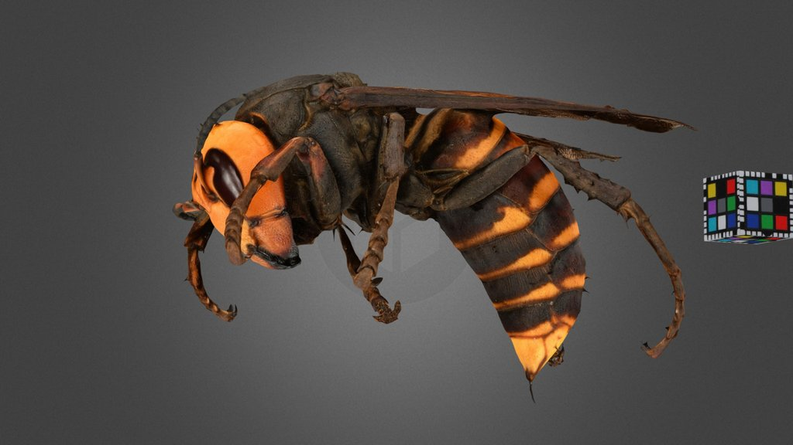

Little Nature / 模型
日本大黃蜂
這是小小自然中的一條 CC0 3D 生物模型資料。支援的 iPhone 和 iPad 可在下載後用 AR 查看模型。

- 分類
- 動物
- 學名
- Vespa mandarinia japonica
- 檔案大小
- 23.5 MB
- 幾何資訊
- 375,650 面 · 188,443 頂點
- 動畫
- 無
分類資訊
界: 動物界 / Animalia
門: 節肢動物門 / Arthropoda
綱: 昆蟲綱 / Insecta
目: 膜翅目 / Hymenoptera
科: 胡蜂科 / Vespidae
屬: 胡蜂屬 / Vespa
種: 日本大黃蜂 / Vespa mandarinia japonica
物種與模型資料
日本大黃蜂 在小小自然中歸入動物模型。頁面把本地化名稱、可用學名、分類階元和 CC0 3D 來源放在一起，方便檢索和核對。
主要分類資訊：界: 動物界 / Animalia, 門: 節肢動物門 / Arthropoda, 綱: 昆蟲綱 / Insecta, 目: 膜翅目 / Hymenoptera。
這個 USDZ 模型包含 375,650 個面和 188,443 個頂點，可在 App 內按需下載並查看。